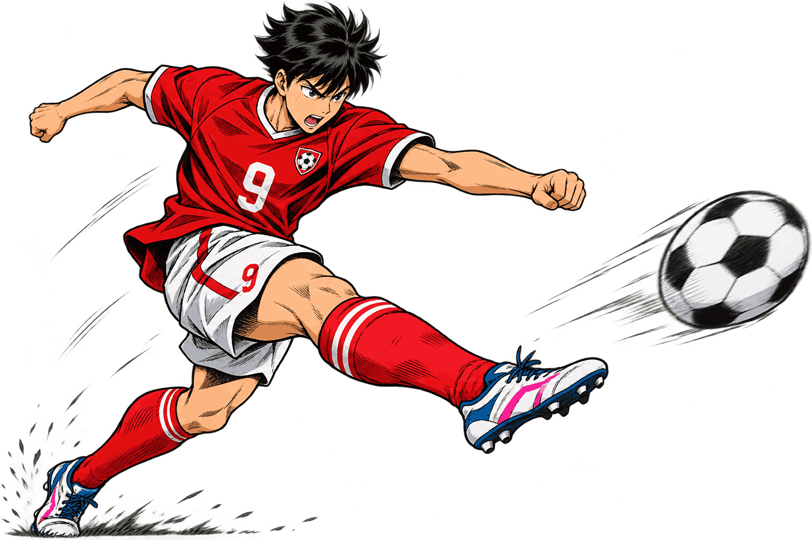

UTÁNPÓTLÁS D-9 / 2. CSOPORT / 2026 ősz
Szagos kis cipők.
Büdös nagy gólok.
Minden mérkőzés. Minden csapat. Minden gól.
Kövesd az utánpótlás-bajnokság eseményeit.
A BAJNOKSÁG
A csapatok állása.
| Hely | Csapat | M | Gy | D | V | P | LG | KG | GK | Lapok |
|---|---|---|---|---|---|---|---|---|---|---|
| 1 | FC Concordia LS I | 7 | 7 | 0 | 0 | 21 | 55 | 10 | +45 | 1 |
| 2 | FC Genolier-Begnins II | 8 | 7 | 0 | 1 | 21 | 49 | 12 | +37 | 1 |
| 3 | FC Stade-Lausanne-Ouchy III | 8 | 6 | 0 | 2 | 18 | 47 | 14 | +33 | 1 |
| 4 | FC Gingins III | 8 | 5 | 0 | 3 | 15 | 32 | 25 | +7 | 0 |
| 5 | FC Echichens II | 8 | 3 | 0 | 5 | 9 | 18 | 48 | -30 | 4 |
| 6 | AF Luc-Dorigny I | 8 | 2 | 1 | 5 | 7 | 25 | 38 | -13 | 3 |
| 7 | FC Stade Nyonnais II | 8 | 2 | 0 | 6 | 6 | 22 | 54 | -32 | 0 |
| 8 | FC Amical Saint-Prex | 8 | 1 | 2 | 5 | 5 | 14 | 38 | -24 | 0 |
| 9 | FC Crissier I | 7 | 0 | 1 | 6 | 1 | 12 | 35 | -23 | 4 |
Jelmagyarázat és rangsorolás
M: mérkőzés · Gy: győzelem · D: döntetlen · V: vereség · P: pont · LG: lőtt gól · KG: kapott gól · GK: gólkülönbség.
A lapok száma a beszámított mérkőzések jegyzőkönyvében rögzített sárga és piros lapokat tartalmazza; minden lap egynek számít. 0 lapot nem sikerült csapathoz rendelni. A jegyzőkönyvek hiányosak lehetnek. A lapok száma a fair playről ad tájékoztatást, és nem befolyásolja a tabellát.
A sorrendet a pontszám, a gólkülönbség, a lőtt gólok száma, végül a csapat neve határozza meg. Ez eltérhet a bajnokság hivatalos szabályaitól.
ISMERD MEG A GÓLSZERZŐKET
Góllövőlista.
| Hely | Játékos | Csapat | Gólok |
|---|---|---|---|
| 1 | Joyce Wasukumuna Bwaro | Concordia LS | 15 |
| 2 | Nahid El Azizi | Gingins | 13 |
| 3 | Henry Mathias Toapanta Moreno | Luc-Dorigny | 12 |
| 4 | Elio Ackermann | Concordia LS | 11 |
| 5 | Sandro Bernardo | Lausanne-Ouchy | 10 |
| 6 | Charly Juan Jose Rif | Genolier-Begnins | 9 |
| 7 | Nathan Llerena Hidalgo | Concordia LS | 7 |
| 7 | Suheyb Abdi Guled | Concordia LS | 7 |
| 9 | Paul Daniel De Haro | Genolier-Begnins | 6 |
| 10 | Alex Dervarics | Lausanne-Ouchy | 5 |
| 11 | Albin Djabiroski | Lausanne-Ouchy | 4 |
| 11 | Flavien Koller | Genolier-Begnins | 4 |
| 11 | Mikyas Abraha | Lausanne-Ouchy | 4 |
| 11 | Sacha Kim Son Dessuet | Concordia LS | 4 |
| 11 | Tim Loeffel | Echichens | 4 |
| 16 | David Stoler | Luc-Dorigny | 3 |
| 16 | Esteban Soutullo | Concordia LS | 3 |
| 16 | Gabriel Carmine Sullivan | Nyonnais | 3 |
| 16 | Isuf Jakupi | Crissier | 3 |
| 16 | Joachim Obele Mpana | Genolier-Begnins | 3 |
| 16 | Kris Moutinho Dos Anjos | Lausanne-Ouchy | 3 |
| 16 | Lahya Reda | Concordia LS | 3 |
| 16 | Lenni Danzeisen | Gingins | 3 |
| 16 | Lucas Recouso | Genolier-Begnins | 3 |
| 16 | Mateo Cairns | Gingins | 3 |
| 16 | Pablo Gosende Ares | Luc-Dorigny | 3 |
| 16 | Rahyan Kheroufi | Lausanne-Ouchy | 3 |
| 16 | Ricards Baiza | Nyonnais | 3 |
| 16 | Timeo Dutton | Gingins | 3 |
| 16 | Valon Da Cunha Zekiri | Amical Saint-Prex | 3 |
| 16 | Yacine Hannachi | Crissier | 3 |
| 32 | Alessio Plancherel | Gingins | 2 |
| 32 | Andreas Morel | Gingins | 2 |
| 32 | Andrew Vaudano | Genolier-Begnins | 2 |
| 32 | Ansou Seck Sakho | Concordia LS | 2 |
| 32 | Clément Urfer | Echichens | 2 |
| 32 | Elmin Memic | Concordia LS | 2 |
| 32 | Eshvin Garhwal | Nyonnais | 2 |
| 32 | Hugo Cardoso | Luc-Dorigny | 2 |
| 32 | Lorenzo Barbezat | Gingins | 2 |
| 32 | Mathias Magello | Luc-Dorigny | 2 |
| 32 | Nel Andy Etoupe | Genolier-Begnins | 2 |
| 32 | Nolan Rama | Genolier-Begnins | 2 |
| 32 | Rafael Barros Araujo | Crissier | 2 |
| 32 | Ryan Palaz | Genolier-Begnins | 2 |
| 32 | Sebastian Escobar Verduga | Lausanne-Ouchy | 2 |
| 32 | Simon Bernardoni | Lausanne-Ouchy | 2 |
| 32 | Simon Nguyen | Echichens | 2 |
| 32 | Suela Morina | Echichens | 2 |
| 32 | William Wegener | Amical Saint-Prex | 2 |
| 32 | Yannis Mourtis Gomez | Amical Saint-Prex | 2 |
| 32 | Zeyd Macic | Lausanne-Ouchy | 2 |
| 53 | Aaron Blank | Nyonnais | 1 |
| 53 | Aitor Le Breton Da Silva | Nyonnais | 1 |
| 53 | Anthony Adrien Maier | Amical Saint-Prex | 1 |
| 53 | Arthur Blanc | Gingins | 1 |
| 53 | Baptiste Joseph | Echichens | 1 |
| 53 | Brian Nanney | Nyonnais | 1 |
| 53 | Charlie Holland | Amical Saint-Prex | 1 |
| 53 | Christopher Osmon | Nyonnais | 1 |
| 53 | Djibril Koné | Lausanne-Ouchy | 1 |
| 53 | Ethan Cunha | Luc-Dorigny | 1 |
| 53 | Gabriel Von Roten | Nyonnais | 1 |
| 53 | Hugo Ferreira Carneiro | Luc-Dorigny | 1 |
| 53 | Jose Emilio Gamboa Ortiz | Luc-Dorigny | 1 |
| 53 | Leo Rolim Gonçalves | Nyonnais | 1 |
| 53 | Lilian Junod | Crissier | 1 |
| 53 | Luis Nahuel De La Calle | Amical Saint-Prex | 1 |
| 53 | Marlon Armand Roux | Gingins | 1 |
| 53 | Maxime Neves | Crissier | 1 |
| 53 | Mayson Sahin | Crissier | 1 |
| 53 | Mike Gregorin | Echichens | 1 |
| 53 | Noam Kenny Renaud | Genolier-Begnins | 1 |
| 53 | Oreste Paul Puech | Genolier-Begnins | 1 |
| 53 | Pablo Inti Villamarin | Crissier | 1 |
| 53 | Pedro Ramirez Donayre | Echichens | 1 |
| 53 | Philippe Robin | Genolier-Begnins | 1 |
| 53 | Ruben Castro Coelho | Genolier-Begnins | 1 |
| 53 | Samir Bekaida | Echichens | 1 |
| 53 | Santiago De Antunes Rosa | Gingins | 1 |
| 53 | Santos Benedit | Genolier-Begnins | 1 |
| 53 | Sufjan Neziri | Nyonnais | 1 |
| 53 | Theo Nicod | Gingins | 1 |
| 53 | Thomas Lanza | Nyonnais | 1 |
| 53 | Vadim Werren | Genolier-Begnins | 1 |
| 53 | Vincent Louis Gardon | Amical Saint-Prex | 1 |
Nincs találat. Próbálj másik nevet vagy csapatot.
Az azonos gólszámú játékosok holtversenyben állnak. A helyezések szűréskor nem változnak.
A góllövőlista adatairól
239 név szerint rögzített gól és 4 öngól szerepel a jegyzőkönyvekben; a mérkőzések eredményei összesen 274 gólt tartalmaznak. 0 gól szerzőjét nem sikerült azonosítani. A gólszerzők adatai hiányosak lehetnek.
Az öngólok nem számítanak bele a játékosok góljainak számába. A hiányos meccsjegyzőkönyvek és a játék nélküli eredmények eltérést okozhatnak a gólszerzők és a mérkőzések góljainak összesítése között.